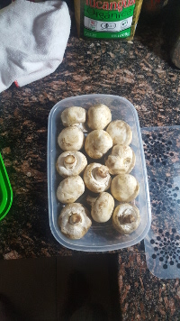
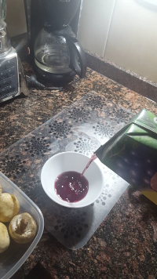
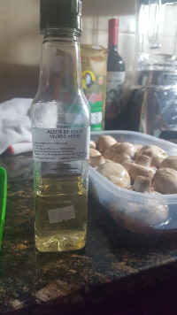
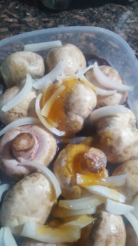
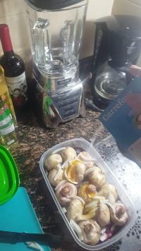
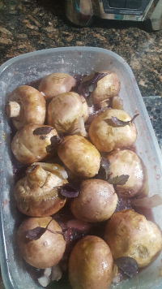
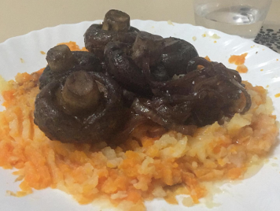

| foto | descripción |
|---|---|
|  | Primera,tenés hongos limpia. |
|  | Entonces, servís vino y añadís en los hongos. |
|  | Siguiente, necesitás aceite de coco o un otre aceite. |
|
Con un cuchilla cortás la cebolla y añadísf a todo. |
|  | Me amo Miel! Necesitás un poco, como un cuchara o mas. |
|  | Ponés sal. |
|  | Poco albahaca. |
|  | Esperás ocho horas, cocinás y sirvés con pure papas. |